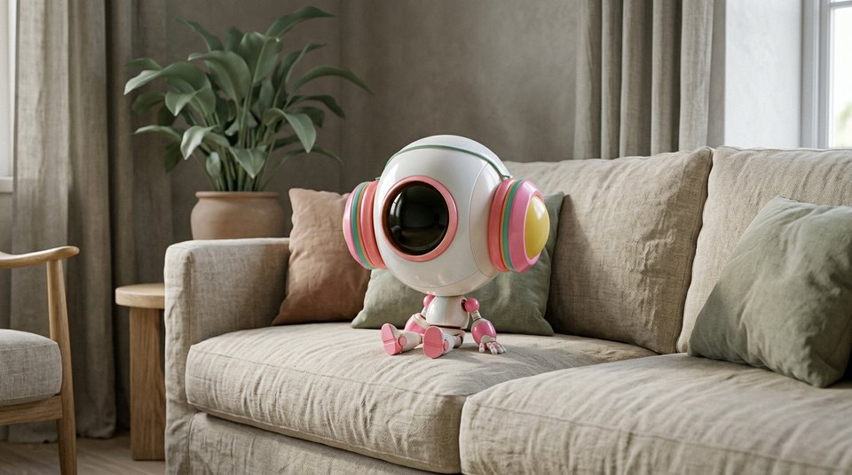

What it means
Colors with the volume turned down: dusty, greyed, quiet tones. Sophisticated and calm.
When to use it
Use when bright colors feel cheap or loud. Editorial and interior content loves this.
Try this
"muted palette living room, linen and clay tones"
Pairs well with
overcast light · minimalist · editorial
Works in
midjourney · nano-banana-pro · gpt-image-2 · seedance
Tags
Examples
